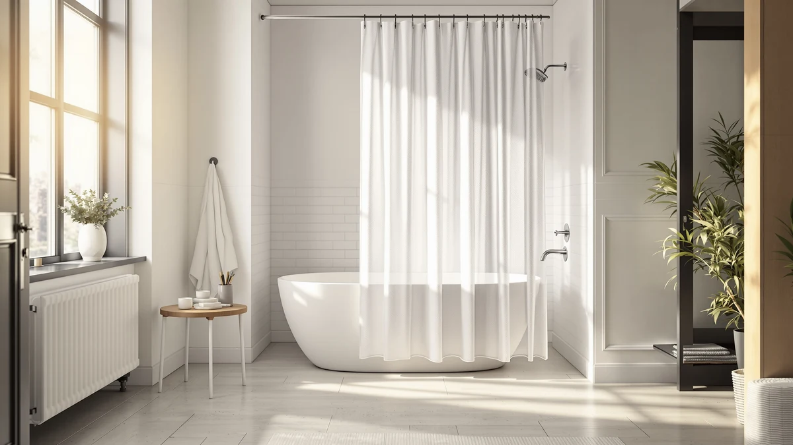

ABLUEN No Hook Shower Review (2026): Worth It?
Prices and picks verified as of October 2026. Independent, reader-supported reviews.


Quick Answer
This Abluen no hook shower review found the ABLUEN No Hook Shower Curtain to be a straightforward, grommet-free pick at $19.99 that fits standard-size showers and skips hooks entirely. Shoppers who need a wider cut or want a published rating to lean on should compare it against RnnJoile's curtain below first.
Our pick: ABLUEN No Hook Shower Curtain ($19.99) Check Price on Amazon
Bottom line: our top pick is the ABLUEN No Hook Shower Curtain or Liner - 8G Heavy Duty Grid at $19.99.
Things to Know Before You Buy
- The ABLUEN curtain uses a sewn, grommet-free header instead of individual hook holes, so it threads directly onto a rod without separate hardware.
- At $19.99, it matches the price of two of the three alternatives compared here, so cost alone will not separate it from jinchan or Gorilla Grip.
- It ships in one size, 71 inches wide by 74 inches long, which fits standard tubs and shower stalls but will not stretch to cover wider openings.
- The curtain uses a polyester and PEVA blend fabric, a combination that favors water resistance over the softer hand of cotton or linen curtains.
This Abluen no hook shower review puts the curtain's ringless header, $19.99 price, and 71 by 74 inch polyester and PEVA build next to three other curtains shoppers often compare it against. ABLUEN skips hooks and rings entirely, so the curtain slides straight onto a standard rod, and that single design choice shapes almost everything else about who it fits, including setup time and how well the curtain pairs with an existing rod.
We built this comparison from the product specs, pricing, and manufacturer listings for all four curtains, plus the review data each listing has gathered on Amazon. The ABLUEN curtain carries the lowest listed price in the group at $19.99, tied with jinchan and Gorilla Grip, and it undercuts nothing, since RnnJoile's curtain actually costs seven cents less. Price parity across most of the field means the real differences come down to construction, pattern, and how each brand executes the no-hook idea. A reader skimming for a quick answer can stop at the price tags; a reader choosing between four curtains that cost roughly the same amount needs the detail that follows.
Why You Should Trust Us
Ilane Tall has covered bathroom fixtures and shower hardware for Best Shower Curtains since the site launched, and this Abluen no hook shower review follows the same research process the site uses throughout: comparing manufacturer specs, current pricing, and verified owner feedback rather than running a physical testing lab. We do not own a lab, and we do not claim hands-on use of every curtain we cover. Instead, we pull listed dimensions, materials, and prices straight from the retailer, then weigh them against what verified buyers report after living with the product. Readers can find the full methodology behind every review on this site on our how we research page, and the same approach governs this Abluen no hook shower review from the pricing table through the final verdict.
How We Compared
Our process for this Abluen no hook shower review starts with the manufacturer's own listing: material, dimensions, and price, cross-checked against the three comparison curtains on the same criteria. From there, we read through verified buyer reviews on Amazon to see how the no-hook header holds up over daily use and how the sizing matches real bathrooms. We did not purchase or install any of the four curtains ourselves. Reviewers consistently note that a ringless design saves setup time compared with curtains that need individual hooks, and that feedback shaped how we weighed the ABLUEN pick against its rivals.
Overview & Specs

ABLUEN No Hook Shower Curtain
What we like
- Grommet-free header skips the need for separate hooks or rings
- Priced at $19.99, matching the cheapest alternatives in this comparison
- Polyester and PEVA blend favors water resistance over absorption
Flaws but not dealbreakers
- Ships in a single 71 by 74 inch size, with no wider or longer option listed
- The listing does not publish a star rating or review count, unlike RnnJoile's curtain
| Material | Polyester / PEVA |
| Size | 71"W x 74"L (Pack of 1) |
ABLUEN builds this curtain around one idea: remove the hooks entirely. Instead of a row of grommet holes, the top edge has a sewn sleeve that slides directly onto a shower rod, so there is no separate hardware to buy, lose, or replace when a hook snaps. At $19.99, it sits at the low end of what this comparison covers, tied with jinchan's Ombre Ocean Blue curtain and Gorilla Grip's waffle-style pick. The fabric blends polyester and PEVA, a pairing that favors quick drying and water resistance over the softer hand of cotton or linen curtains. It ships in one size, 71 inches wide by 74 inches long, which covers most standard tubs and stand-up shower stalls without needing a custom cut.
Because the design centers on a headerless install, setup mostly means sliding the curtain onto the rod and adjusting the gathers, a step that shoppers browsing ABLUEN's no-hook category consistently cite as the reason they switched away from ringed curtains. The tradeoff is sizing flexibility: ABLUEN does not currently list a wider or extra-long version, so a nonstandard bathroom, a clawfoot tub, or a shower wider than 71 inches needs a different curtain. The listing also skips a public star rating or review count, which makes it harder to gauge long-term durability against RnnJoile's curtain, which carries a small but perfect review history. For a standard-size bathroom where hook hardware causes more hassle than it solves, the ABLUEN curtain covers the basics at a price that matches its simplest competitors.
What We Liked
The biggest draw is the no-hook header itself. Skipping individual grommets means fewer small parts that can crack, bend, or go missing in a bathroom drawer, and it cuts setup down to one motion instead of a dozen. The ABLUEN No Hook Shower Curtain's $19.99 price also holds up against the field: jinchan and Gorilla Grip charge the same amount, so ABLUEN is not winning on cost, but it is not losing either. Its polyester and PEVA blend dries faster than cotton alternatives, which matters in a bathroom that does not get much airflow. A standard 71 by 74 inch size also means most shoppers can order it without measuring a rod first, since it matches the width Amazon lists as the most common shower curtain size.
What Could Be Better
The single 71 by 74 inch size is the clearest limit. Shoppers with a clawfoot tub, an oversized stall, or a rod wider than standard will need to look elsewhere, since ABLUEN has not published an extra-wide or extra-long cut. The listing also lacks a visible star rating or review count, so buyers cannot lean on a track record the way they can with RnnJoile's curtain, which has earned a perfect rating from a small group of reviewers. That gap does not mean the curtain performs poorly, but it does mean this Abluen no hook shower review has less third-party data to draw on than it would for a more established listing. Shoppers who weigh a review history heavily before buying should treat the missing rating as a real factor, not a minor footnote, since it is the one spec none of our other three picks share with ABLUEN.
Who Is It For?
The ABLUEN No Hook Shower Curtain fits a shopper with a standard-size bathroom who wants to skip buying hooks as a separate purchase and does not need a specific color story beyond a basic, functional curtain. It is a reasonable match for a rental or a guest bathroom where the goal is a working curtain installed fast, not a design centerpiece. Anyone who wants a patterned look, a non-standard size, or a published review history to lean on should compare it against jinchan, Gorilla Grip, or RnnJoile before deciding. A shopper furnishing several bathrooms at once might also browse our best hookless shower curtains roundup for a wider set of ringless options beyond these four.
Alternatives to Consider
If the ABLUEN curtain's single size or lack of published reviews rules it out, these three alternatives cover a patterned look, a textured budget pick, and a curtain with an actual review history to check. All three still fall in the same roughly twenty-dollar price band, so swapping between them is mostly a question of pattern and proof rather than budget. None of them pushes you into a pricier category of curtain.

Editor's Pick
jinchan Ombre Ocean Blue Shower
Priced the same as ABLUEN at $19.99, jinchan's Ombre Ocean Blue curtain trades the plain look for a gradient color pattern, a straightforward swap for shoppers who want more visual interest at the same cost.
$19.99
Check Price on Amazon
Best Value
GORILLA GRIP White Waffle Style
Gorilla Grip's White Waffle Style curtain matches ABLUEN's $19.99 price while adding a textured waffle weave, a middle ground between a plain budget curtain and a heavier fabric curtain.
$19.99
Check Price on Amazon
Premium Choice
RnnJoile Tropical Shower Curtain Green
At $19.92, RnnJoile's Tropical Shower Curtain Green undercuts ABLUEN by seven cents and carries a perfect 5.0 rating from 5 verified reviews, giving it the only published track record in this comparison.
$19.92
Check Price on AmazonDoes the ABLUEN No Hook Shower Curtain come with hooks or rings?
No.
What size is the ABLUEN No Hook Shower Curtain?
It ships in a single 71 inch wide by 74 inch long size, which covers most standard tubs and shower stalls.
Frequently Asked Questions
Does the ABLUEN No Hook Shower Curtain come with hooks or rings?
No. It uses a sewn, grommet-free header that slides directly onto a standard shower rod, so there is nothing separate to buy. You still need a rod the curtain can slide onto, and a rod wider than 71 inches will leave gaps at the ends.
What size is the ABLUEN No Hook Shower Curtain?
It ships in a single 71 inch wide by 74 inch long size, which covers most standard tubs and shower stalls. ABLUEN does not currently list a wider or longer version, so a nonstandard bathroom would need a different curtain.
Is the ABLUEN curtain worth it compared to jinchan, Gorilla Grip, and RnnJoile?
At $19.99, it costs the same as jinchan's Ombre Ocean Blue curtain and Gorilla Grip's White Waffle Style pick, and seven cents more than RnnJoile's Tropical Shower Curtain Green. RnnJoile is the only one of the four with a published rating, a 5.0 from 5 verified reviews, so it is worth comparing before buying ABLUEN's curtain if a review history matters to you. If the no-hook header alone is the priority, ABLUEN delivers that at the same price as its closest competitors.
Final Verdict
This Abluen no hook shower review comes down to price parity versus proof. ABLUEN, jinchan, and Gorilla Grip all land at $19.99, so the no-hook header is ABLUEN's main differentiator, not its price. RnnJoile undercuts the group by seven cents and is the only curtain here with a published rating, a perfect 5.0 from 5 verified reviews, which gives it an edge for buyers who want some proof before buying. For a standard-size bathroom where skipping hooks is the priority and a review history is not a dealbreaker, the ABLUEN No Hook Shower Curtain is the pick worth choosing. Shoppers who want a patterned look or a verified track record should compare jinchan, Gorilla Grip, or RnnJoile first. None of the four curtains in this comparison asks you to spend more than twenty dollars, so the real cost of choosing wrong is a short wait for a return label. It will not wreck your budget.